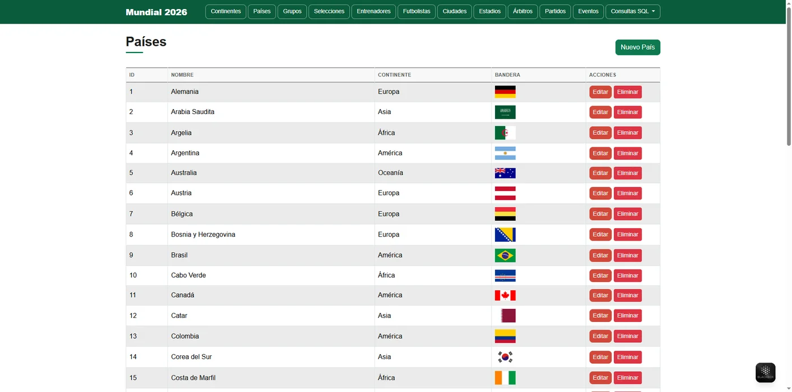
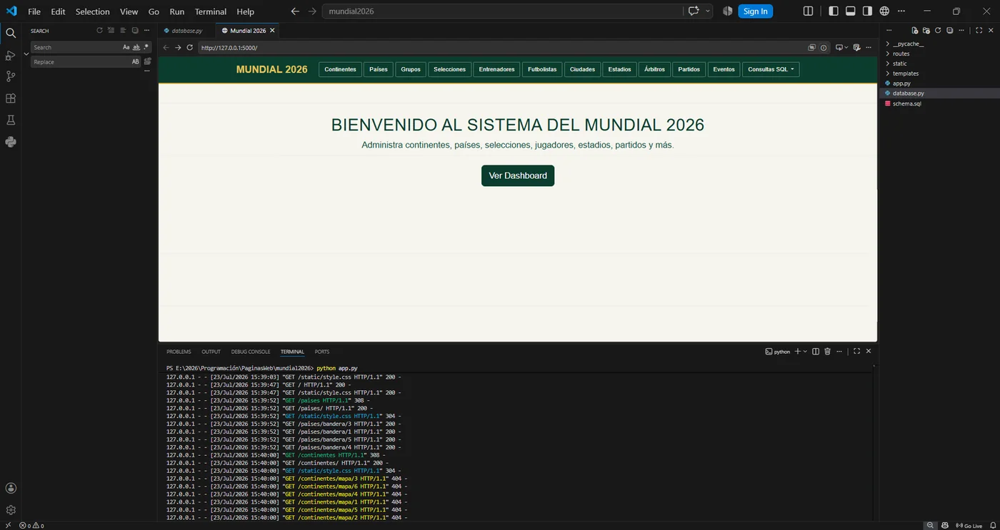

Sistema de gestión del Mundial 2026
Aplicación web en Python · 2026Aplicación web para administrar la información del Mundial 2026. Tiene un menú con una sección por cada tema y tablas desde donde se crean, editan y eliminan los registros.
- Doce secciones: continentes, países, grupos, selecciones, entrenadores, futbolistas, ciudades, estadios, árbitros, partidos, eventos y consultas SQL
- Carga de imágenes: mapas de continentes, banderas de países y escudos de selecciones
- Países con su continente, y selecciones con su grupo y su ranking FIFA
- Los doce grupos del torneo, de la A a la L

Países con su continente y su bandera 
El proyecto en Visual Studio Code, con el servidor en marcha